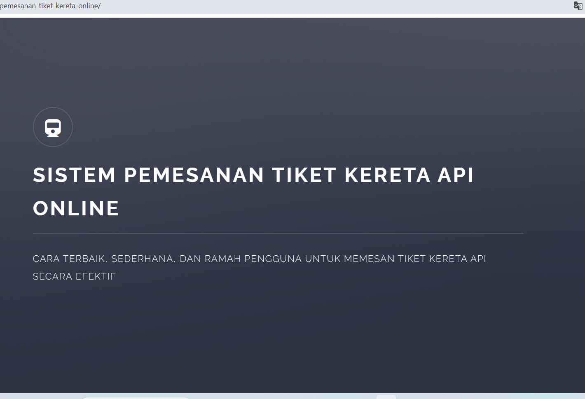
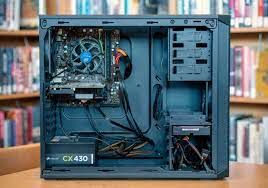

pengalaman Saya



Saya adalah seorang web Developer dengan pengalaman 1 tahun dalam pengembangan aplikasi web dan perangkat lunak. Menguasai berbagai teknologi seperti CodeIgniter danWordPress, saya terbiasa mengelola proyek dari konsep hingga peluncuran, serta menciptakan solusi yang efisien dan berorientasi pada pengguna. Saya bersemangat untuk terus belajar dan berinovasi, serta berkontribusi pada kesuksesan tim dengan pendekatan kolaboratif.
Download CVSaya seorang mahasiswa yang memiliki gairah menjadi seorang pengembang website. Selain sedang belajar menjadi pengembang website, Saya juga senang membuat konten digital lainnya. Seperti membuat video youtube, , membuat poster, dll. Saya juga bergelut pada pemasaran digital.
Lebih banyak!Membuka layanan dalam pembuatan website apapun. Menyertakan domain .com, penyediaan hosting tanpa batas, desain kustom sesuai preferensi, pengaturan konten, pemeliharaan gratis, jaminan website, keamanan SSL, optimasi SEO, peningkatan kecepatan halaman Google, jaminan, pelatihan gratis untuk pengelolaan website, kemampuan untuk mengedit website sendiri, dan website binar digital marketing.
Lebih banyak!Layanan berfokus secara khusus pada penghasilan konten yang berkualitas tinggi. Ini meliputi desain dan pengembangan merek, produksi video, fotografi, pembuatan situs web, desain grafis, serta kebutuhan branding dan pemasaran lainnya.
Lebih banyak!Menyediakan layanan konfigurasi jaringan seperti yang bertujuan untuk membantu perusahaan di segala sektor melakukan adaptasi digital guna meraih keunggulan di ranah online serta meningkatkan kinerja bisnis secara keseluruhan.
Lebih banyak!